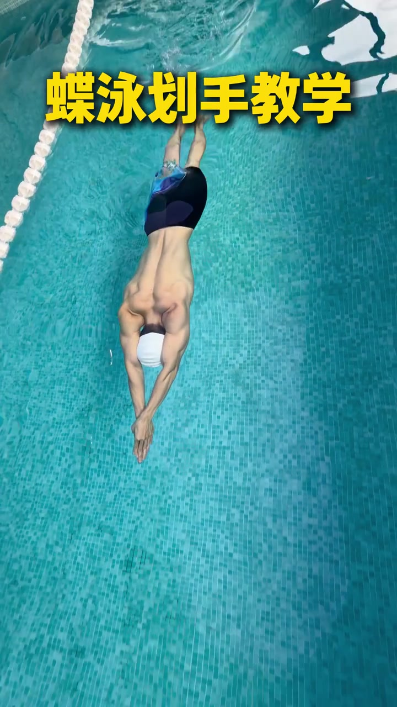
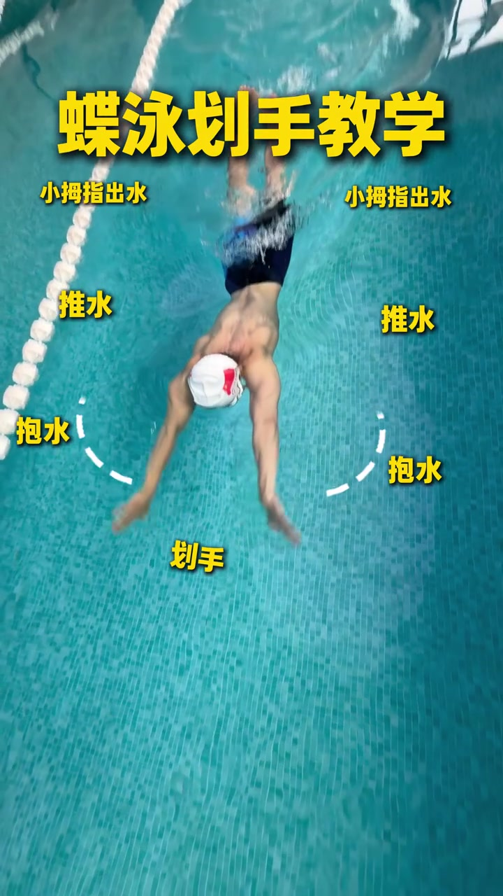
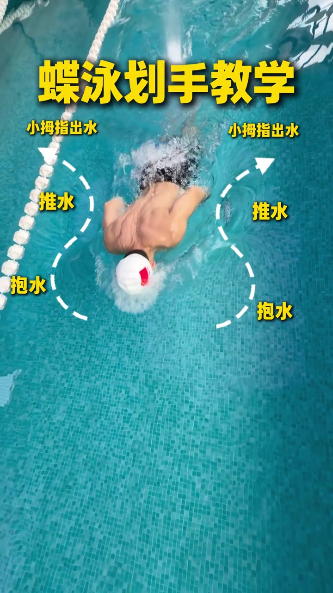
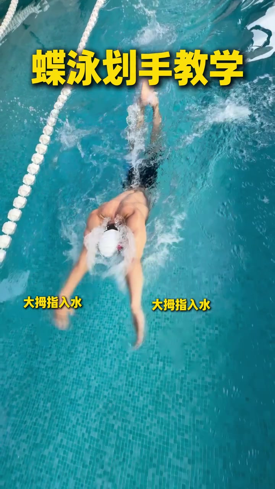
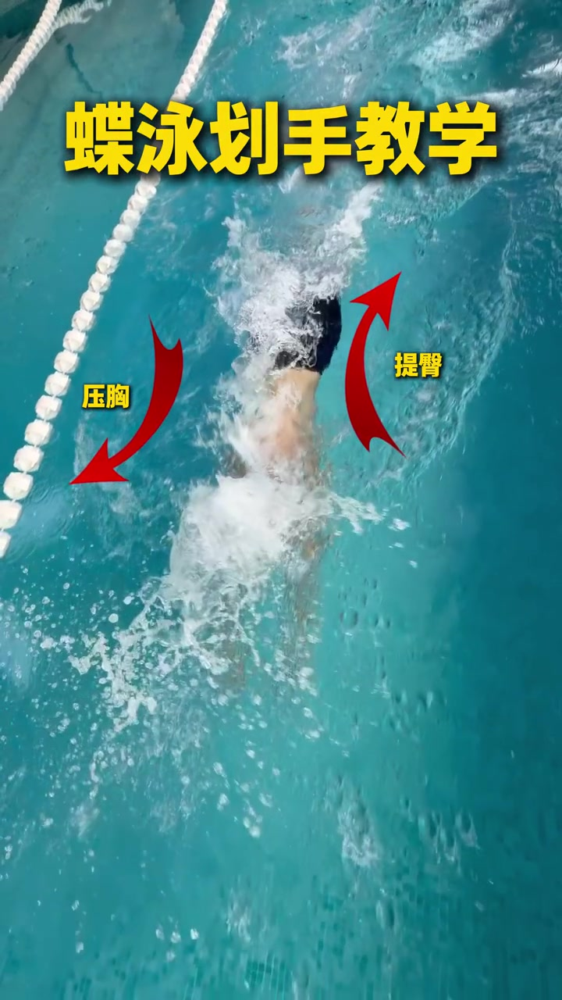
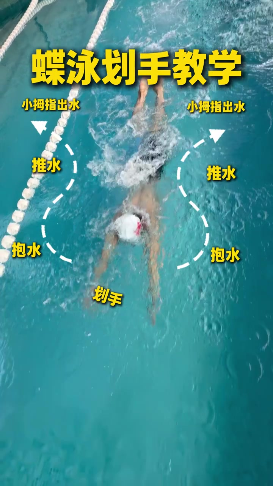
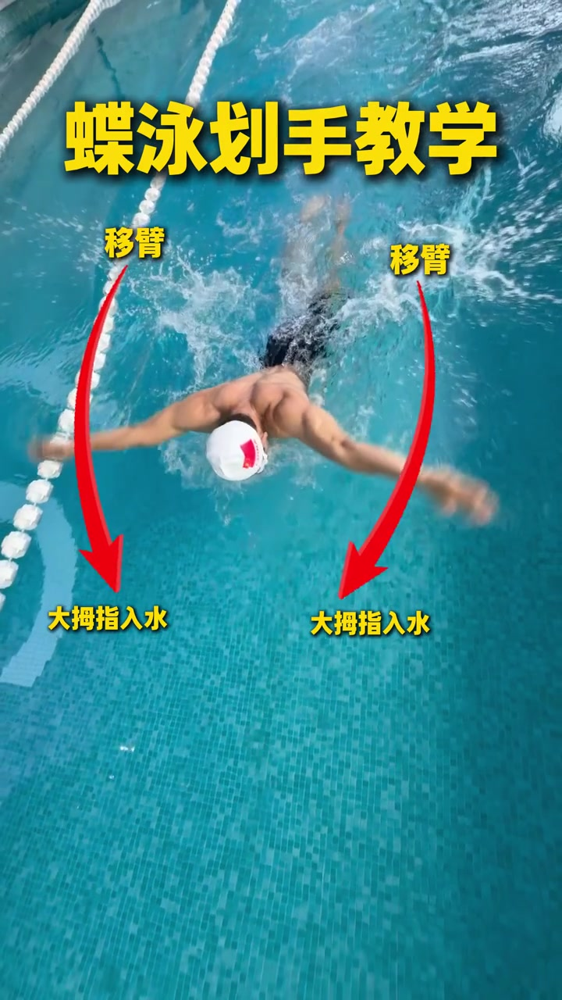
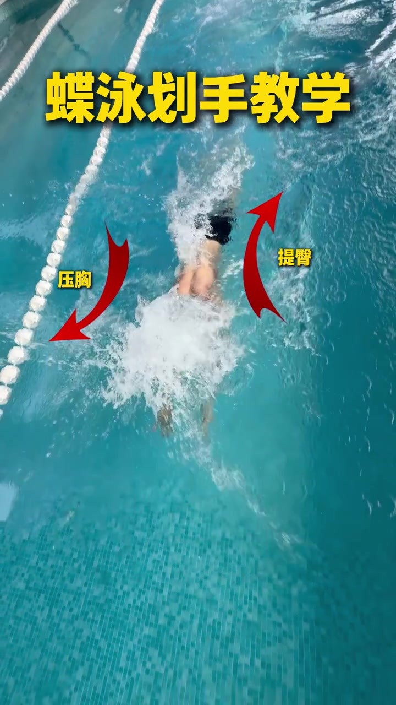

开场 · 00:00
俯拍定调：双手前伸准备划手
镜头几乎垂直朝下，泳池蓝砖与左侧泳道线把画面框稳。泳者戴白帽、俯身流线型前伸，双手合拢贴在头前——这是蝶泳划手前的起点，不是已经外划的抱水位。
本片配乐较强、口播几乎不可辨。Whisper 原始识别曾出现字幕署名幻觉，页末转录按「[听不清]」保留原始分段时间轴。正文依据俯拍画面、黄字叠字与笔记标题展开，不补写未说出的口播。

路径总览 · 00:02
白虚线画出整条水下手轨迹
画面立刻叠上对称白虚线：双手从前方外展开始「划手」，沿曲线进入「抱水」，再向髋侧「推水」，末端箭头指向「小拇指出水」。俯拍让钥匙孔/沙漏形路径一目了然——先宽、再收、再推后出水。

后段 · 00:03
推水收束，小拇指出水接恢复
泳者双手已扫到躯干两侧偏后，虚线末端仍标着「推水」与「小拇指出水」。这一帧把「出水姿势」钉死：不是手掌平拍水面，而是小拇指侧先破水、为随后空中移臂留出转腕空间。

入水 · 00:05
恢复结束：大拇指入水
下一拍切到入水瞬间——双手前伸刚触水，两侧对称黄字「大拇指入水」。与出水「小拇指」形成对照：出水小拇优先，入水大拇优先，整条手臂在空中完成旋转后再插回前方。

身体协同 · 00:06
压胸与提臀同框出现
当上半身压入水面溅起白浪时，左侧红箭头写「压胸」、右侧红箭头写「提臀」。视频把躯干起伏直接绑进划手周期：手在推水/出水时，胸下压、臀上提，形成蝶泳特有的波浪，而不是只动手臂。

复述 · 00:08
再走一遍钥匙孔路径
约 8 秒处再次铺开完整虚线与四段标签，像把同一套动作用慢镜头复读一遍。读者可以对照前面的入水与压胸帧，把「前伸 → 外划抱水 → 内收推水 → 小拇指出水」串成连续动作，而不是孤立口号。

移臂 · 00:11
空中移臂，回到大拇指入水
双手离开髋侧、向前方挥移，红弧线标「移臂」，箭头末端再次落到「大拇指入水」。至此闭环闭合：水下钥匙孔推进 → 小拇指出水 → 空中移臂 → 大拇指入水 → 再进入下一拍抱水。


16 秒看完记住什么
俯拍把蝶泳划手画成可跟的路径图：水下按「划手 → 抱水 → 推水 → 小拇指出水」走钥匙孔；空中「移臂」后以「大拇指入水」接下一拍；同时用「压胸 / 提臀」提醒波浪不能丢。口播听不清时，以画面叠字为主要证据即可跟练。